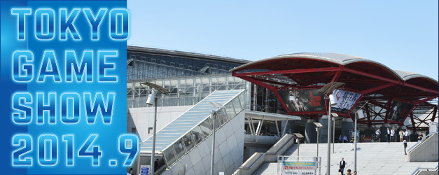

- ビジネスデイ
- 2014.9.18[Thu]-19[Fri]
- 一般公開
- 2014.9.20[Sat]-21[Sun]
- 会場
- 幕張メッセ

出展社募集中
What’s New - 新着情報
もっと見る- 2014.06.11
- 2014.05.28
- 2014.05.28
- 2014.05.23
[プレスリリース] メインビジュアルが決定！ 「GAMEは変わる、遊びを変える。」を“羽化”で表現／ブース出展のお申し込みは5月30日（金）まで
- 2014.05.10
- 2014.04.11
- 2014.04.07
【関連イベント情報】年間を代表するゲームソフトを決定する
「日本ゲーム大賞2014 年間作品部門」本日より一般投票受付開始！<投票締切:7月18日（金）> - 2014.03.10
【関連イベント情報】ゲームクリエイターの登竜門「日本ゲーム大賞アマチュア部門」の応募作品募集を開始しました
<応募締切:6月30日（月）> - 2014.02.19
- 2014.02.19
- 2014.02.19
開催発表会を開催しました。